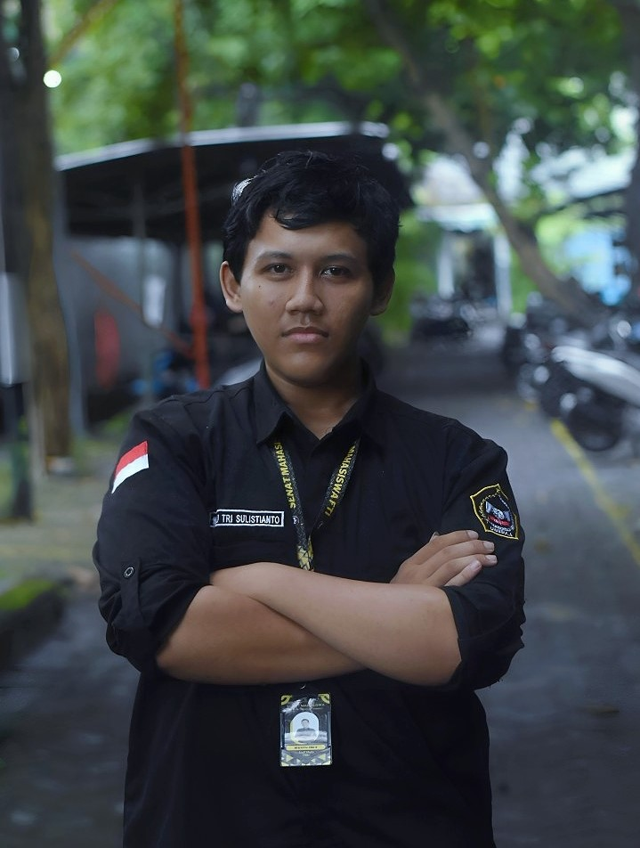

Wuthering Waves is an open-world action RPG set in a hostile world trying to fight against the Tacet Discords.
Read our review to see what it did well, what it didn't do well, and if it's worth playing. In Wuthering Waves, you take on the role of a mysterious newcomer simply known as the "Rover."
Waking up without any memories or connections and in a world beset by creatures known as Tacet Discords, they must navigate the war-torn landscapes, underground factions,
and roaming monsters to find the truth about themselves and the world.
Wuthering Waves features:
- Combat that heavily rewards skill
- Thoughtful team building design
- Gripping and intriguing narrative
- Kuro Game's finest visual effects
- Fast-paced navigation
- Overworld farming without much need for stamina
- Very attractive gacha mechanics for weapons
- Coop with friends against tough stages

Honkai: Star Rail is a turn-based RPG very similar to old-school JRPGs (especially the Final Fantasy series).
The game is split into two modes: overworld and battle. In the overworld, you run around the map and when you encounter an enemy group,
you will 'transfer' into the battle mode where you have to defeat the enemies in turn-based combat.Each Character in Honkai: Star Rail also has a Path as well.
You can think of Paths as character classes. A Character's Path will give you a general idea of what role that
Character fulfills in combat as well as what Light Cones they can fully utilize.
There are currently 7 Paths in the game:
- Destruction (Focus on Blast and Single target damage)
- Hunt (Focus on Single target damage)
- Erudition (Focus on AoE damage)
- Harmony (Focus on supporting allies, allowing them to do more damage)
- Nihility (Focus on debuffs and Damage over Time)
- Preservation (Focus on keeping the team alive)
- Abundance (Focus on keeping the team alive)

Characters are the playable units in Honkai: Star Rail. They are obtained mainly via Warps, the game's gacha system.
However, some Characters can be obtained for free via in-game missions or events.
Character Stats
- HP - How much damage a Character can take before falling in combat
- ATK - How much damage a Character deals
- DEF - Reduces the damage a Character takes
- Speed - Determines how fast and how often a Character will act in combat
- Crit Rate - How likely it is for the Character to land a critical hit
- Crit DMG - Determines the damage multiplier when landing a critical hit
- Break Effect - Enhances Weakness Break effects (the amount of damage dealt upon it), the amount of DMG dealt by DoT's per turn and also how far enemy actions are delayed
- Outgoing Healing Boost - Determines the amount of healing done by the Character's Healing ability
- Energy Regeneration Rate - Determines how fast a Character charges energy for their Ultimate ability
- Effect Hit Rate - Determines how likely it is for a Character to apply a debuff on the enemy
- Effect RES - Determines how difficult it is for an enemy to apply a debuff on the Character
- Elemental Damage Boost - Increases all damage a character deals. Note that there are seven different elements in the game and each element has its own separate Elemental Damage Boost stat
The story in Honkai Impact 3 follows the journey of Kiana and her team in fighting against a mysterious force that is attacking the earth, namely Honkai.
You act as the captain of the Hyperion Mothership, and your task is to direct the three Valkyries, namely Kiana, Mei and Bronya,
to fight against the Honkai Beast that threatens Earth. The gameplay in Honkai Impact is quite simple, you are required to defeat all the enemies to
continue your journey in eradicating the Honkai Beasts. Each character has a different fighting style, for example Kiana who fights with two guns,
Mei who uses Ninjutsu and a sword, and Bronya who controls a robot in battle.
Honkai Impact 3rd features:
- Graphic display that makes your eyes widen
- Very helpful AI-chan
- Waifu harvest
- The presence of the voice actor makes the characters come alive
- Simple gameplay with a repetitive feel
- Control system that makes it easier for players
- Very attractive gacha mechanics for weapons
- Coop with friends against tough stages

For Japanese fans, especially in the mobile game realm, you will definitely be familiar with the Arknights game,
which is predicted to be on par with other popular games such as Fate Grand Order, Granblue Fantasy, and Azur Lane.
For this reason, the KotGa Crew was curious and wanted to try out how interesting the game made by Yostar was,
which is the same developer as Azur Lane. Without further ado, let's start discussing this game which was just
released globally on January 16!.
Arknight features:
- Combat that heavily rewards skill
- Thoughtful team building design
- Gripping and intriguing narrative
- Kuro Game's finest visual effects
- Fast-paced navigation
- Overworld farming without much need for stamina
- Very attractive gacha mechanics for weapons
- Coop with friends against tough stages

Profile
Wahyu Tri Sulistianto